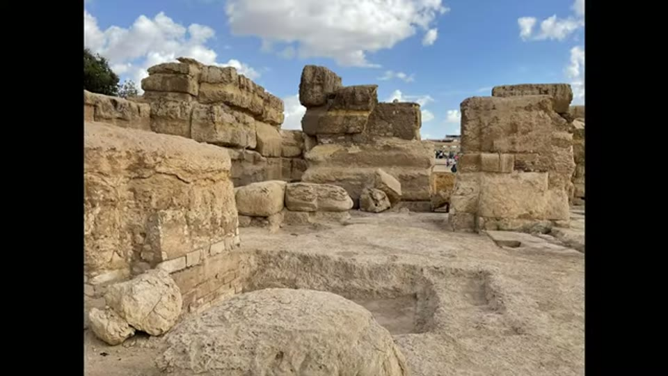

Curious Being
The Sphinx Temple's Secret Explains the Water Erosion Mystery
Tina · 22 min · watch on YouTube · summarised 2026-08-23
Two puzzles, joined 00:00–01:32. The structure directly in front of the Great Sphinx is called the Sphinx Temple and is read as a religious building — yet there is no access or connecting door between it and the statue it supposedly honours, which archaeologists have found hard to explain. And the walls around the Sphinx carry severe water erosion in a place that has not had the rainfall to produce it.
The erosion, as it is usually argued
She states the standard alternative position before departing from it 01:39–03:06. Robert Schoch argues the heavy vertical erosion on the enclosure walls could only have come from rainfall and runoff over a long period rather than from wind and sand, and that most geologists agree with that observation. Giza receives about 1 inch / 25 mm of rain a year and has been dry since around 2600–2500 BC, when the monuments are conventionally dated — so Schoch places the oldest parts of the Sphinx at around 12,000 years ago.
She adds a second geologist, Jørn Christiansen, who argues the rainwater erosion on the surrounding rock walls may predate the carving of the Sphinx itself. His point is about geometry: the enclosure walls are cut at right angles to each other to a height of up to 10 m, so they are manifestly man-made. Whether or not the statue was made at the same time, the walls and the basin were excavated a very long time ago.
The same project
Blocks in the two temples in front of the Sphinx — the Sphinx Temple, abutting the plaza, and Khafre's Valley Temple beside it — are limestone, some around 100 tons, sheathed in rose granite 03:30–04:08. Mapping the blocks, researchers found that the bedrock excavated from around the Sphinx body is the stone the temples are built from. Quarrying the enclosure and building the temples were one operation.
She adds an observation of her own: several megalithic blocks in the Sphinx Temple show the same vertical water erosion as the enclosure walls, less severe but distinct — which she reads as consistent with the temple and the basin belonging to the same wetter period.

Her own observation that the temple carries the same weathering as the enclosure walls, which she reads as putting both in the same wetter period.
The plateau slopes
The elevations, which the rest of the argument rests on 04:27–05:30:
| elevation | |
|---|---|
| Khafre pyramid base | 10 m above Khufu's |
| Khufu pyramid base | 61 m / 200 ft above sea level |
| Sphinx floor, at the paws | 20 m above sea level |
The Great Pyramids stand over 40 m — thirteen storeys — higher than the Sphinx. The plateau slopes east toward the Nile; north and west of the Sphinx are higher ground. The Sphinx sits in a large sunken area whose own floor drops 2 m / 6.5 ft toward the Nile.

The drop the drainage argument depends on: pyramids on the high ground, Sphinx below them, temples lowest of all.
Her reading of that arrangement 05:23–06:02: a deep rectangular pit cut at the bottom of a sloping impermeable plateau will collect the runoff of everything above it, whatever it was intended for. That is why the walls around the Sphinx took the erosion — not distributed rainfall across the site, but concentrated runoff draining into a basin.
And since the pit is man-made and its spoil built 100-ton temples, she argues this was not incidental. Digging a 10 m basin at the foot of the plateau, which would inevitably become the plateau's main drain, was by design 06:02–06:30. She proposes it functioned as a stormwater catch basin in the modern engineering sense.
One consequence she draws 07:14–07:45: a statue placed in a murky stormwater collection pit to be weathered is a strange way to treat a deity. She notes there is no contemporary Egyptian inscription on the Sphinx statue, and that no one knows who made it or when.
The temple nobody recorded
The Sphinx Temple's own history is the part she calls a hidden mystery 08:03–09:49. It has massive limestone cores partly sheathed in rose granite, a symmetrical layout, a central courtyard with columns, two east-facing entrances toward the Nile, and many sunken depressions in its floor.
The feature she says is rarely discussed: the temple is dug into the bedrock and sits about 2.5 m / 8 ft lower than the base of the Sphinx. Both are in the man-made pit, and the temple is lower still, low enough that it was completely buried in sediment for thousands of years and only found in modern times.
Two consequences follow from that burial:
- Around 3,400 years ago Amenhotep II built a mudbrick temple on top of it, overlapping its northwest corner — apparently unaware it was there. No Egyptian document mentions the Sphinx Temple's construction or its builder.
- In the 1st century AD the Romans cleared the Sphinx of sand and built a monumental stairway in front of its paws — directly on top of the buried temple. The Roman stair was dismantled in the 1930s so the temple could be excavated.

The Roman stair standing over a temple nobody knew was there - and the gap in the wall she says was already open when they built across it.
The blocked door
Her own observation on the wall separating the Sphinx terrace from the temple 09:49–10:49: one stretch of it is filled with smaller white rocks while the rest is large blocks. She argues the filler is obviously not original and may have closed an opening. Viewed from another angle, that blocked stretch sits beside one of the narrow walled magazines on the right of the central axis, and there appears to be a matching opening on the left, facing a similar magazine — suggesting two symmetrically placed doorways.

Two positions in the wall between the Sphinx terrace and the temple, placed symmetrically about the temple's axis, which she argues were once open.
The 1926 photographs
The strongest section, and it is archival rather than interpretive 10:49–14:23. Crediting Keith Hamilton's work, she argues the temple as it stands today is a restored and tidied version that may not reflect its original design. Excavation began around the 1920s at the south end, proceeded in attempts separated by years, and fallen blocks were reassembled by estimate or convenience.
Hamilton numbered blocks visible in photographs taken in 1926, before the Roman stair came down, and matched them to their positions now. In the southwest section between the enclosure and the temple there are seven megaliths still in position — and there is a long gap between blocks 6 and 7. The white-filler "blocked door" visible today is beside block 7. Another 1926 angle shows the gap more clearly, and shows a Roman masonry wall built to bridge it.


The archival core of the argument: the same blocks matched across a century, and a course standing today that was not there in 1926.
Two further things the old photographs show:
- The top megalith layer present today is absent in 1926, so it was added during restoration. She marks the two added blocks with arrows on the modern half of the pair.
- The narrow magazines' upper courses are not visible in a 1930s photograph either, which she reads as those also being later additions.
Her argument about the gap 12:04–12:17: it was probably open originally. The Romans were building a wall across that line, and existing megaliths would have made the job easier, not harder — so they would have used them rather than removing them. The gap they had to bridge with their own masonry was a gap that was already there.
A 1930s photograph taken after the stair was removed shows something else, she says: water erosion channels cut into the Sphinx enclosure floor 12:29–12:41.
The conclusion she draws about the discipline rather than the site 13:17–14:23: the temple was "fixed" piece by piece as it was excavated, so the southwest corner was reassembled while most of the building was still under sand. Excavators of that era were looking for treasure, not recording stonework. Architectural plans drawn in the 1960s and 70s surveyed the restored fabric and may therefore be unintentionally misleading — and the unexplained absence of access between enclosure and temple may simply be a product of the 1930s repairs.
Water, not people
The 2.5 m drop means the openings she proposes were never doorways for people 14:35–15:38. What they would let through is water. Stormwater collected in the basin would pour into a structure sitting two metres below it, flooding it periodically — which is her reason for saying the building cannot be a temple of worship. She argues the location is wrong for any building of value: since the Neolithic, temples and dwellings have gone on high ground to avoid flooding, and no culture handling 100-ton blocks would put an important temple below a drainage basin. On the Osireion, the obvious counter-example of a deliberately flooded structure, her answer is that there is no higher collection basin above it.
Her proposal: a detention facility
If the enclosure was the catch basin, the abutting structure at lower elevation was the detention and treatment stage 17:27–19:47. She maps modern stormwater components onto the temple's features one by one:
| temple feature | proposed function |
|---|---|
| the two openings in the separating wall | water inlets |
| four narrow symmetrical magazines with shallow depressions | sedimentation chambers |
| rectangular depressions cut in the bedrock floor | sediment traps and settling ponds |
| the two long paths toward the east gates | sand or gravel filtration beds |
| the southern pathway between the two temples | spillway for overflow |
| the in-ground granite drain under the northern wall | outlet pipe |

The cuttings in the temple floor that her proposal reads as sediment traps and settling ponds.
Downstream 19:47–20:56, she points to the lower open area in front of the two temples, which still floods, where ancient Egyptian mudbrick walls protrude and more is buried. She reports hearing that core drills there brought up granite pieces — notable on a limestone plateau, and possibly buried structure. Some researchers think the area was a canal harbour, in which case she suggests the granite could be a dock and the treated water was released into the canal.
The frame this all sits in 20:56–21:28 is her earlier hypothesis that the Giza complex was a prehistoric mine and permanent mine-waste storage site, which would need exactly this kind of runoff management.
What you can check yourself
- The 1926 and 1930s photographs exist and are published. Whether the gap between blocks 6 and 7 is there, whether a Roman wall bridged it, and whether the top megalith course is absent are all questions a reader can settle by looking at the same images.
- The white filler stones in the separating wall are visible on site today and in any decent photograph of that wall.
- The elevations are surveyed figures — the pyramid bases, the Sphinx floor, the 2 m slope within the enclosure, and the temple sitting below the Sphinx base.
- The plateau's slope is visible in any aerial photograph and settles by itself where runoff goes.
- Amenhotep II's mudbrick temple overlapping the northwest corner and the Roman stairway standing over the buried temple are documented, and the stair's 1930s removal is recorded.
- The block-mapping result — that the temples are built from the stone cut out of the enclosure — is published work, not her inference.
- Erosion on the Sphinx Temple's own blocks is photographable by anyone who goes.
- The absence of any Egyptian inscription on the Sphinx statue naming a maker is a claim about the record that can be checked.
What the video does not settle
- The restoration argument and the drainage argument are independent, and only the first is evidenced. That the temple was reassembled hastily from 1926 onward, and that today's fabric differs from what the earliest photographs show, is supported by matched images. Everything about catch basins, sediment traps and filtration beds is analogy.
- An open gap is not a doorway. The photographs show a gap in a partly collapsed, partly buried wall. Whether that gap was an original opening, an area of collapse, or stone removed earlier is not established, and the Roman-builders-would-have-used-them argument is reasoning about convenience rather than evidence.
- The mapping onto modern stormwater engineering is unfalsifiable as presented. Every feature is assigned a function that fits, and no feature is identified that the hypothesis fails to explain or that would count against it. Sunken depressions in a temple floor have conventional readings — sockets, basins, emplacements — and none is considered.
- Order of construction is assumed. The argument requires that the basin was cut, and the temple built below it, as a designed system. If the enclosure was quarried first for stone and the erosion came later, the same physical facts follow without any of the intent.
- Erosion on the temple blocks may date the stone, not the wall. The blocks came out of the enclosure; if the enclosure walls were weathered before quarrying, weathered faces could be built into a later structure. The video treats the erosion as evidence the temple is as old as the basin, which is one reading of two.
- The southern pathway does double duty. It is offered as a spillway here; it is also the space between two temples, and no feature distinguishing a spillway from a passage is pointed to.
- The granite in the core drills is hearsay. She says she heard of the drilling; no report, team or date is given, and no depth or quantity.
- The mining hypothesis is imported. The industrial framing comes from prior videos and is not argued here, so a reader meeting it for the first time is asked to take the largest claim on trust.
See also
- Could the Giza Pyramids and Sphinx Be Much Older Than Believed? — the direct sequel, which takes the catch-basin conclusion as given and tries to date it from paleoclimate.
- Questioning the Luminescence Dating Result of the Giza Pyramid — the same two temples, dated by a published method that returns 2,000-year spreads within each of them.
- Great Pyramids' Radiocarbon Dating — the same argument that what looks like original fabric at Giza is often later repair, made about mortar instead of megaliths.
What we have not checked
- The modern half of each before-and-after pair carries a Meretseger Books logo and copyright mark. Whether that is the publisher of Hamilton's survey has not been confirmed.
- Keith Hamilton's work has not been located or read. The block numbering, the 1926 and 1930s photographs and the reconstruction of what was added when are all as she presents them from his material.
- Names are as given and have not been independently confirmed: the geologist Jørn Christiansen, and the attribution of the block-mapping result to unnamed researchers.
- Robert Schoch's position is given in her summary, not quoted, and his 12,000-year figure has not been traced to a publication here.
- The figures are as stated and have not been traced: 61 m and 200 ft for Khufu's base, 10 m above it for Khafre, 20 m at the Sphinx's paws, the 2 m enclosure slope, the 2.5 m drop to the temple floor, 10 m enclosure walls, 100-ton blocks, 25 mm annual rainfall, 3,400 years for Amenhotep II.
- Whether the missing top course in the 1926 photograph is genuinely absent, as opposed to hidden by the camera angle or by sand, has not been verified independently of her presentation.
- The core drilling that recovered granite is reported as something heard; no source exists to check.
- The claim that no Egyptian document mentions the Sphinx Temple's construction is a negative about a large corpus and has not been checked.